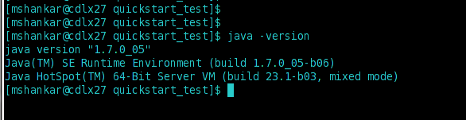
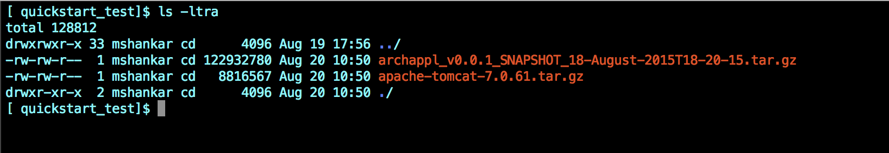
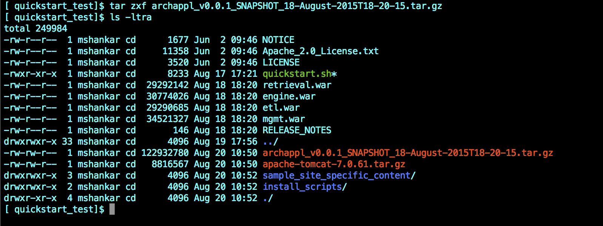
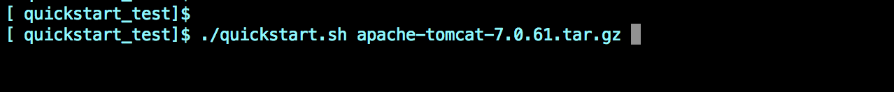

Quickstart Guide
The steps outlined here should get you started quickly with evaluating and testing a new archiver appliance.
Note, these steps are not meant for production deployments, but are meant for evaluating and getting to know the system.
For more details on how to deploy in a cluster or in a production environment, please see the Installation guide.
- Make sure you have a recent version of Sun Java 1.8 from Oracle by running
java -version. You should see something like so  - Download the installation package to a Linux machine into a brand new folder. This should give you a tar.gz file like
archappl_vx.x.x.tar.gz. - Download a recent version of Tomcat 7.x. into the same folder. You should now have two files in this folder like so 
- Untar the
archappl_vx.x.x.tar.gz. This should untar into 4 WAR files and a bash script like so  - Run the script like so 
- This should start the Tomcat process in the foreground. Once all the webapps have been initialized (it takes about 2-5 minutes), you should see a log message in the console All components in this appliance have started up. We should be ready to start accepting UI requests like so

- Open a browser to
http://<<machinename>>:17665/mgmt/ui/index.htmland you should see the home screen for your archiver appliance. - If your EPICS environment variables are set up correctly, you should be able to start archiving PV's right away.
Note it takes about 5 minutes for the archiver appliance to measure the event rate, storage rate etc and to transition PVs from the
Initial samplingstate to theBeing archivedstate. - To stop the appliance, use a
CTRL-Cin the console.
- We set the Log4j root logging level to ERROR by default. You should not see any exceptions or ERROR messages in the console on startup.
- We do not persist configuration in this setup. That is, if you kill the Tomcat process, you'll need to resubmit your PV's to the archiver on restart.
- You can increase the verbosity of console messages by passing in a
-v(for verbose) argument to startup script. The sets the Log4j root logging level to DEBUG.